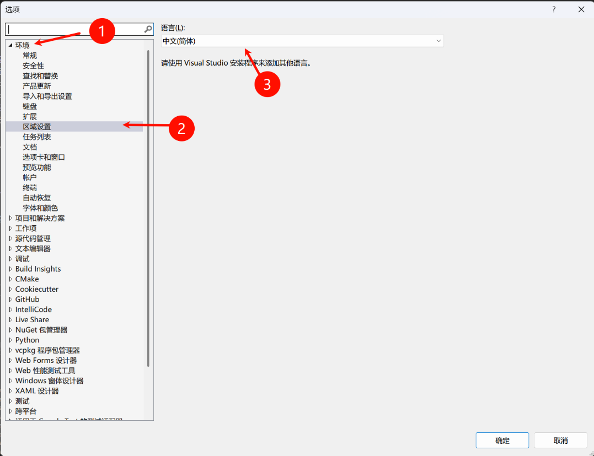
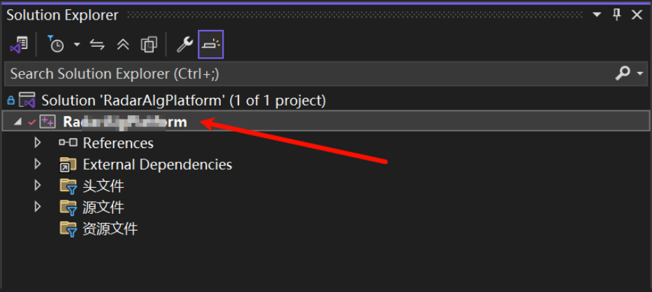
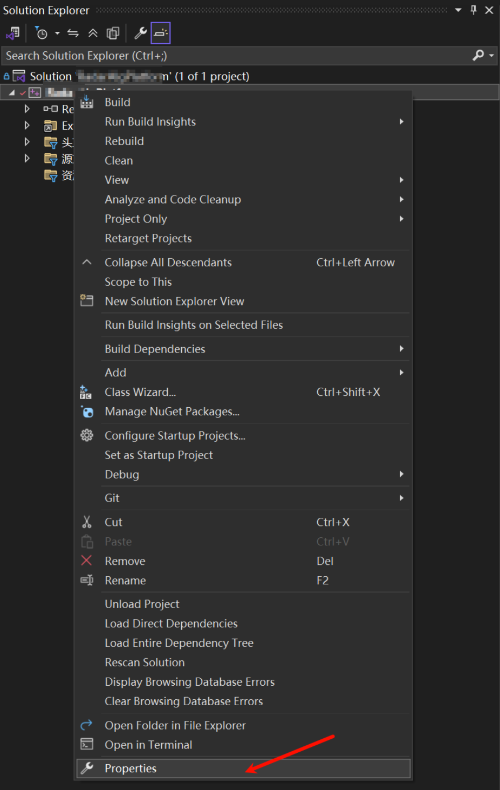
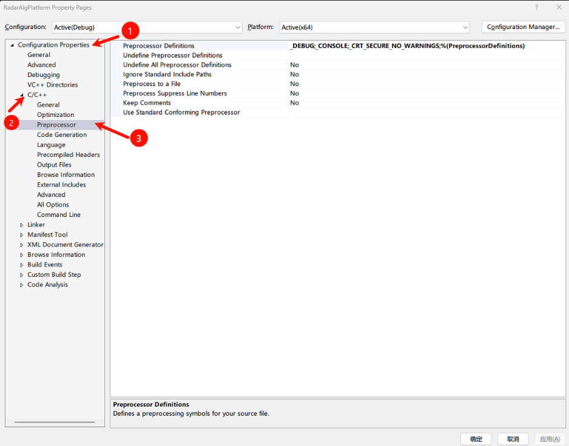

🛠️ Visual Studio
The beauty of open source is that it is technically borderless. — u/AlterTableUsernames
Visual Studio 切换语言
在Visual Studio 中切换语言
- 打开“工具”菜单:在Visual Studio 中，点击“工具”菜单。
- 进入“选项”:选择“选项” (Options)。
- 找到“环境”:在左侧的树形菜单中，找到“环境” (Environment)。
- 选择“区域设置”:在“环境”下，选择“区域设置” (International Settings)。
- 选择语言:在右侧的“语言”下拉菜单中，选择你想要的语言(例如中文)。
- 应用并重启:点击“确定” (OK) 应用更改，然后重启Visual Studio。
如果下拉语言后没有没有想要的语言，需要通过 Visual Studio Installer 安装后再来设置。

fopen 编译报错 This function or variable may be unsafe
1>xxxxx error C4996: 'fopen': This function or variable may be unsafe. Consider using fopen_s instead. To disable deprecation, use _CRT_SECURE_NO_WARNINGS. See online help for details.
在 Visual Studio 项目设置中，请按照以下步骤操作：
- 打开项目属性：
- 在 Visual Studio 的解决方案资源管理器中，右键单击项目名称。
- 
- 从上下文菜单中选择“属性”。
- 
- 在 Visual Studio 的解决方案资源管理器中，右键单击项目名称。
- 导航至预处理器定义：
- 在项目属性窗口中，展开“配置属性”。
- 展开“C/C++”。
- 点击“预处理器”。
- 
- 添加：
- 在“预处理器定义”字段中，添加
_CRT_SECURE_NO_WARNINGS。 - 点击“确定”以应用更改。
- 在“预处理器定义”字段中，添加
- 重新构建项目：这将确保更改生效，并且警告 C4996 被抑制。
调试过程中遇到了严格按照上述配置后，即使 Build -> Clean Solution, Build -> Build Solution 仍然报相同的错误。退出 Visual Studio 后再次打开，重新编译，通过。
重要提示：
- SDL 检查：如果你使用的是 Visual Studio 2012 或更高版本，还有一个额外的设置，称为“SDL 检查”，位于 C/C++ > 通用。此设置启用了额外的安全代码生成功能，并将安全相关的警告作为错误处理。将“SDL 检查”设置为“否”也可以抑制警告，但通常建议保持启用状态，并尽可能解决底层的安全问题。
- 替代方法：虽然将
_CRT_SECURE_NO_WARNINGS添加到预处理器定义是全局抑制项目中警告的推荐方式，但你也可以：- 在代码文件的开头添加
#define _CRT_SECURE_NO_WARNINGS，在任何#include指令之前。 - 使用
#pragma warning(disable:4996)来抑制特定代码段的警告。
- 在代码文件的开头添加
请记住，抑制警告并不能解决使用潜在不安全函数相关的安全风险。最好使用这些函数的安全版本（如strcpy_s、sprintf_s等），或在代码中实现适当的安全措施。